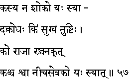
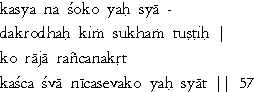

|

|
Verse 57 - Meaning:
Q:Who is (kasya) free from sorrow (na-soko) ?
A:That one (yah syaad) who never gets angry. (a-krodhah)
Q:What (kim) is happiness (sukham) ?
A:It is the state of contentment. (tushtih).
Q:Who (ko) is a true king (raajaa) ?
A:That one who gains the loyalty of the subjects or the people under his rule.(ranjana-krt)
Q:Who is(kasca) despicable like a dog (svaa) ?
A:That one who (yah-syaat) courts the favour of the mean. (niica-sevako)
|